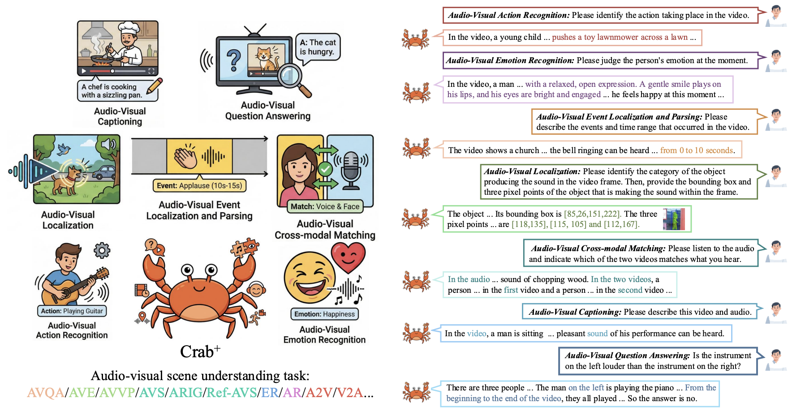
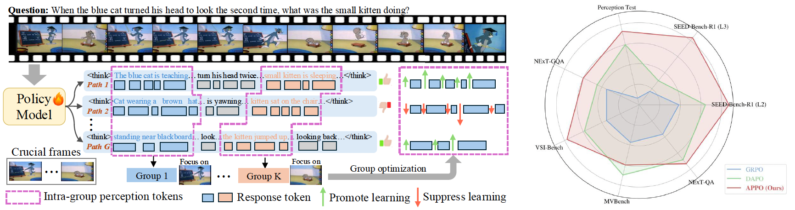
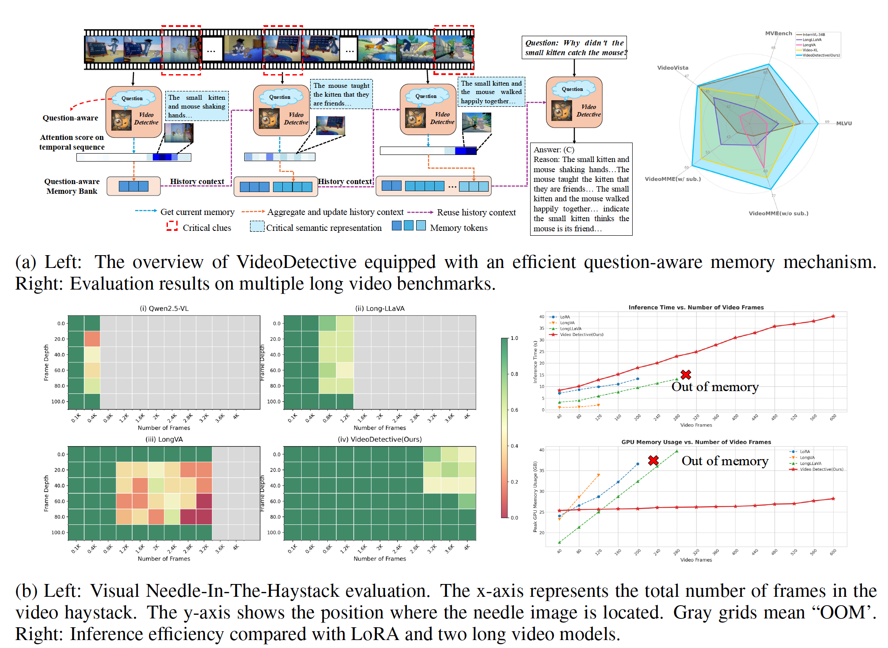
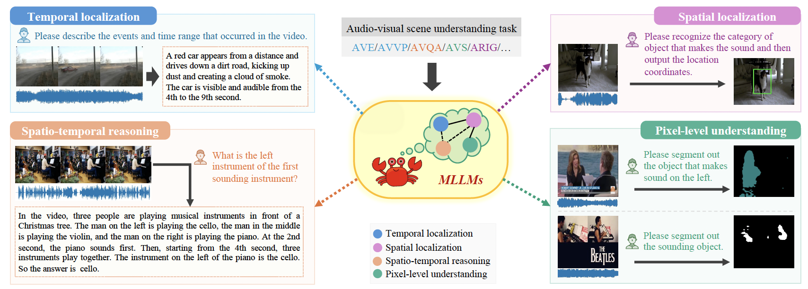
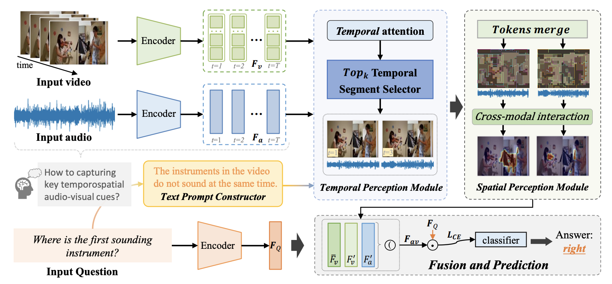
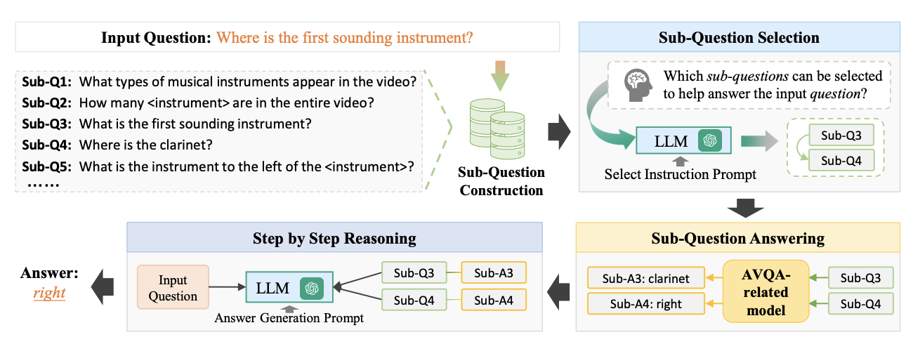

I am a Master student at Gaoling School of Artificial Intelligence, Renmin University of China, advised by Prof. Di Hu. I am a member of GeWu-Lab. Before that, I received my B.E. degree from Dalian University of Technology in 2023.
My research interests lie in Multimodal Large Language Models (MLLMs), Audio-Visual Scene Understanding and Reasoning. I am dedicated to building unified models that can perceive and reason across multiple modalities including vision, audio, and language.
* denotes equal contribution. Full list on Google Scholar.






CVPR Sight and Sound Workshops , 2024.
M.S. in Artificial Intelligence, Gaoling School of Artificial Intelligence
Advisor: Prof. Di Hu
B.E. degree